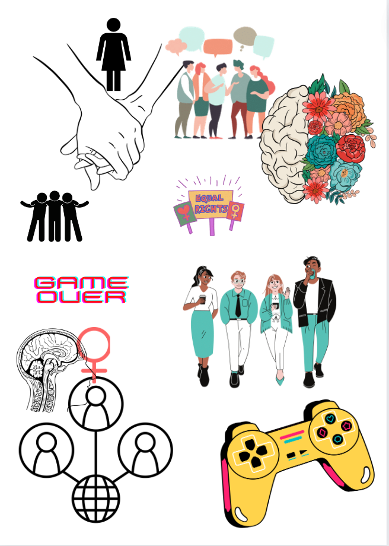

IL activity 2
Identifying your audience
- Game developers of all ages and genders but especially male and those in higher positions, any geographical location, educated in programming (i.e. bachelors, masters, or phd level)
Age: Above 18.
If I choose to mention sensitive topics for mature audiences, they must be able to process that information and I must remain discreet. They should be ideally employed in game development.
Gender: Any
It should have different impacts on both women and men, however, it should prompt internal dialogue or action in both.
Language proficiency: High
If the targeted audience is highly educated and skilled adults, their language proficiency will be of high level, no matter their nationality.
Education level: Bachelors, maters or even PhD
Knowledge of the topic: Some prior knowledge will be required to situate the issue and give context.
Attitude toward writer or organisation: Impartial
It should remain informative and not necessarily persuasive.
Audience: action Reflection of their current situation and their ability to do or not do something.
Name: James Stevenson
Occupation: Senior game developer at Climax Studios
Web habits: Working with programming, gaming with friends during spare time. Uses a VPN, stresses security and value personal data.
Quote: 'I do not like Apple.'
Knowledge level: BSc in game design
Goals: To alleviate stigma around gaming.
Needs/wantsL: Logical explanation to everything, remain objective and do not persuade with emotion.
Skills: Coding
User Need Statement - these will be particularly useful to inform and point out an issue in the community.
Lab 2
The Pudding: The Birthday Paradox
The audience
Children
It is an interactive and captivating way of learning simple probability.
Affordances, conceptual models and signifiers
The purpose is to explain how simple probability can be if you understand the grounds it works on.
Easy to navigate, minimal buttons/choices
The navigation is fairly simple with a back button.
The illustrations and animations are what make it more appealing to children.
Contrast, Repetition, Alignment, Proximity
The background enables multiple elements to be presented at once without the user getting lost. Simple graphics make it not too overwhelming for children to remember.
It is well centred in the middle of the screen.
Consistent with introducing new ideas and keeping the same style and tone.
Content Design
It identified something that children can struggle with, a particular problem in education. They combined various media elements for the children to visualise and hopefully remember with visual cues.
Certain problems in education arise due to overcomplicated explanations in books and by teachers. Simplifying everything and make it it fun to look at transforms the way children look at education.
The Pudding: The Sounds of Mexico City
The audience
Anyone
Affordances, conceptual models and signifiers
Visual pleasing and artistically innovative
Various audiences would appreciate such a brilliant use of multimedia in an engaging and informative way.
Contrast, Repetition, Alignment, Proximity
The animation give it a certain tone and atmosphere.
Adding real life sounds contextualises the issue.
Consistency in presentation leaves the reader more drawn to read the text.
Content Design
It is informative and light-hearted but serious at the same time.
It found a social problem, specific to a location, that might not widely discussed.
Due to certain communities being more outcast with the digital age, by bringing light onto social issues that might be happening around you without you knowing, this design succeeded in increasing awareness to problems in urban planning.
Task 2: Consider your audience
Using a simplistic design and introducing a few elements at a time might make it more memorable, captivating and not too overwhelming. Stick to a few colours and styles as not to confuse or take their attention from the text/purpose.
Task 3
